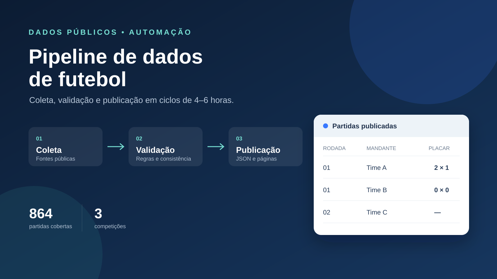

Automação ativaPythonGitHub Actions
Pipeline automatizado de dados de futebol
Um pipeline de ponta a ponta que coleta, trata e publica calendário e resultados da Copa de 2026 e das Séries A e B do Brasileirão.
- 864
- partidas cobertas
- 3
- competições
- 4–6h
- ciclo de atualização
